Open Seerah Quest in your browser and add it to your home screen, so it opens like any other app.
Seerah Quest is a website that works like an app. You don't need the Play Store or App Store. Once you add it to your home screen it gets its own icon, opens full screen, and even opens without internet.
On an Android phone
Open Chrome and go to seerah-quest.fly.dev (or the link your organiser sent you on WhatsApp).
Tap the ⋮ menu at the top right of Chrome.
Tap Install app. On some phones it says Add to Home screen. Then tap Install.
Find the green Seerah Quest icon on your home screen and open it from there from now on.
Tap the Share button (the square with an arrow pointing up).
Scroll down and tap Add to Home Screen, then Add.
On a computer
Just open the address in any browser. On a wide screen the menu stays open on the left side, like this:
Tip
Installing on Android also lets the app send you a gentle daily reminder. See tutorial 11.
Getting started · Tutorial 2
Join with an invite code
Create your account with the code of the person who invited you, or ask an organiser for one.
Seerah Quest is invite-only. This keeps the community small and the numbers honest. The first time you open the app, three short welcome screens explain the idea.
The welcome screens
Choose English or اردو. You can change this any time later.
Then tap Next. The next two screens explain how counting works and what caravans are. Tap Get started on the last one.
Create your account
Tap Join Seerah Quest at the top of the white card.
Invite code: type the username of the person who invited you (for example ayesha_k), or a founders code an organiser gave you. A green line shows who invited you when the code works.
Choose your username: 3 to 20 English letters, numbers or _. Pick it carefully: it is also your invite code for other people.
Type your email and WhatsApp number. Choose your country first, then type the number without the country code (for Pakistan: 300 1234567).
City: type the first two letters and pick your city from the list. Urdu works too for Pakistan's main cities. If your town is not there, pick the nearest bigger one.
Choose a password of at least 6 characters, then tap Join Seerah Quest. You are in!
Check your email
We send you a link to confirm your email. You can use the app without it, but a confirmed email is how you reset a forgotten password.
No invite code?
Under the invite code box, tap Request access.
Write your name, WhatsApp number, city and (if you like) email, then tap Send request. An organiser reviews it and sends you a code.
Logging in next time
Tap Log in and type your username, email or phone number with your password.
Log inForgot password?
Forgot your password? Tap Forgot password?, type your email and tap Send reset link. Open the link in the email within one hour. No email? Check spam, or ask your organiser on WhatsApp: they can send you a reset link.
Getting started · Tutorial 3
Add your durood
After you recite, type how many and press Add. Or tap a quick amount, or count with your finger.
This is the heart of Seerah Quest. You recite durood in your own way, at your own time, and then add the number to the app. The big number on Today is how many you have added today.
Today: your number for today, your goal and the box to add more
Way 1: type the number
Recite durood. Count it however you like: on your fingers, a tasbih, or from your usual wird.
Under How many durood did you recite? type the number, for example 313.
Or tap +100, +500 or +1,000. Each tap adds that amount to the box, so +500 then +100 makes 600.
Press Add. The big number goes up and a green message says "313 durood saved ✓".
Way 2: count by tapping
Tap Count by tapping +. A big green button appears.
Tap it once for each durood while you recite. The number to add grows with each tap. The phone gives a soft click, a stronger buzz at every 33 and a chime at every 100.
When you finish, press Add to my count. Reset starts the taps again from zero.
Pressed Add by mistake?
Right after you add, a message appears at the top with an UNDO button. Tap it within a few seconds and the number is taken back.
Missed it? You can still change today's and yesterday's numbers. See tutorial 5.
Adding from any other screen
On most screens there is a round green + at the top. It opens a small sheet with the same box, so you can add durood without going back to Today.
No internet?
Add your durood anyway. The app keeps it safely on your phone and shows it straight away. It is sent by itself, once only, when you are back online.
Good to know
Days follow Pakistan time. A new day starts at midnight in Pakistan.
Add the total at the end, or a little at a time through the day. Both are fine: the app adds them up.
One member can add up to 50,000 in a day (10,000 a day in your first week).
Counts are on the honour system. Recite for the sake of Allah and His Messenger ﷺ, not for ranking.
Getting started · Tutorial 4
Find your way around
The four buttons at the bottom, the Browse menu, dark mode and Urdu.
The bar at the bottom
On a phone, four buttons sit at the bottom of every screen:
Button
What you find there
Today
Your counter, today's quests, the Sunnah of the day, the lecture, and the 40-day challenge.
Feed
News from the organisers, and what members shared: reflections, Sunnah photos, milestones.
Compete
Rankings of people, caravans, cities and the weekly league.
Qabila: your invite code and the people you brought in (tutorial 9).
Me: your level, points, badges and history.
Settings: your photo, name, goal, city, password.
At the bottom: switch to اردو or Log out.
A small number beside an item means something is waiting for you there. Tap outside the menu or ✕ to close it.
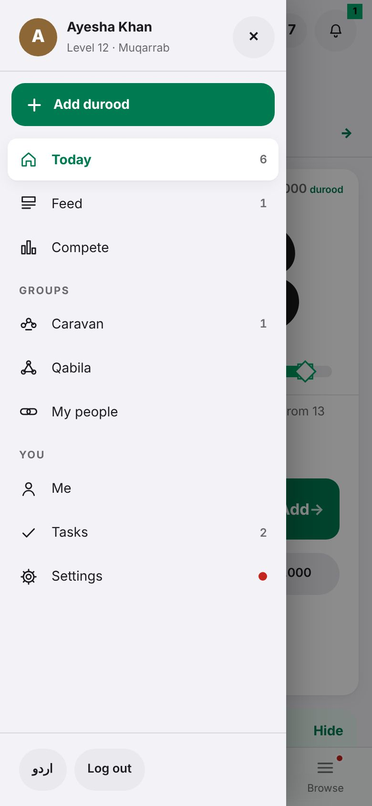
Today, step by step
Scroll down on Today. Under the counter come sections you can fold away by tapping their title: Getting started (for new members), Quests, Sunnah & Seerah and the 40-day challenge. The app remembers which ones you folded.
The number beside a title, like 3 / 5, shows how many are done.
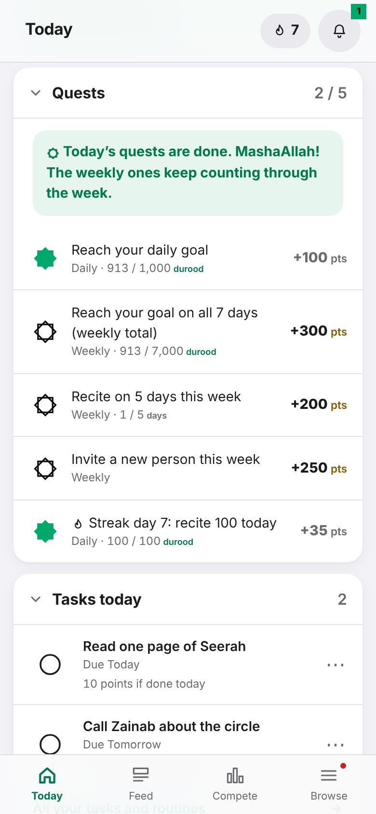
The top bar
The flame with a number is your streak: how many days in a row you have recited.
The bell opens News. A green number on it means news you haven't read.
The green + adds durood from any screen.
Urdu and dark mode
Go to Browse → Settings → Language and display. Choose English or اردو, and Light or Dark. Until you choose, the app follows your phone's light or dark setting.
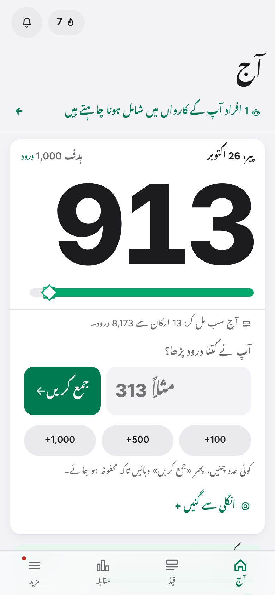
اردو
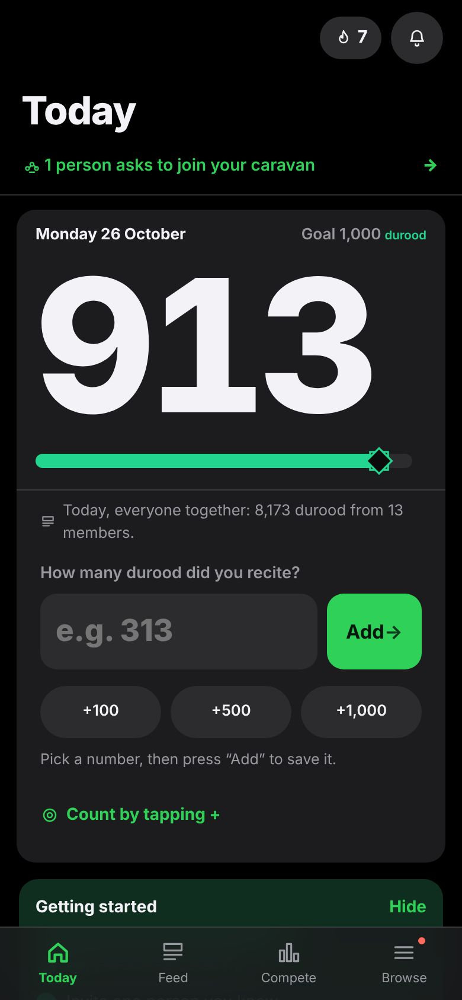
Dark
Tip
Pull down at the very top of a screen to refresh it. On a phone, tapping the button of the screen you are already on takes you back to the top.
Every day · Tutorial 5
Correct a wrong number
Change today's or yesterday's entries from History. Every change stays on the record.
Typed 1,000 instead of 100? No problem. You can change any number you added today or yesterday.
Tap Browse, then Me.
Scroll down to History and tap its title to open it if it is folded.
Each number you added is listed under its day, with the time you added it.
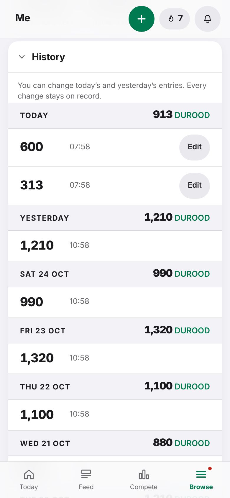
Tap Edit beside the wrong number. Type the right number and tap Save.
The day's total changes straight away. Tap Cancel to leave it as it was.
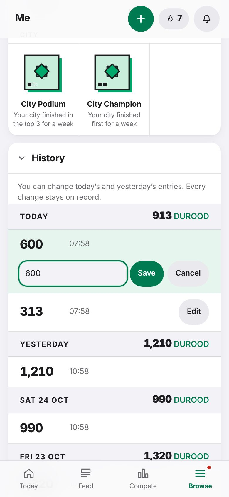
Good to know
Older days can't be changed. They show without an Edit button.
Nothing is secretly overwritten: the entry shows it was edited and what it was. This keeps everyone's totals honest.
To take back a number you just added, the quickest way is the UNDO button in the message that appears right after adding.
Forgot to add yesterday's durood? You can't add a new entry for an earlier day. Add it today instead.
Every day · Tutorial 6
Streaks, quests, points and badges
How your streak, daily quests, points, levels and badges work, in plain words.
These are small encouragements to keep a daily habit. They are not the goal: the goal is the durood itself.
Your goal and streak
Your daily goal is shown at the top of the counter (for example Goal 1,000 durood). The green bar fills as you get closer. Change the goal in Settings.
Your streak (the flame at the top) counts the days in a row you have recited. If you haven't recited yet today, Today reminds you gently, and more firmly after 6 pm.
A streak shield saves your streak if you miss one day. You earn one for every 7-day streak.
Quests
Quests are small tasks under Quests on Today. Some are daily, some weekly. Each one shows how far you are (for example 1 / 5 days) and the points it pays.
A filled green star means done. When all daily quests are done, the app says so. The weekly ones keep counting through the week.
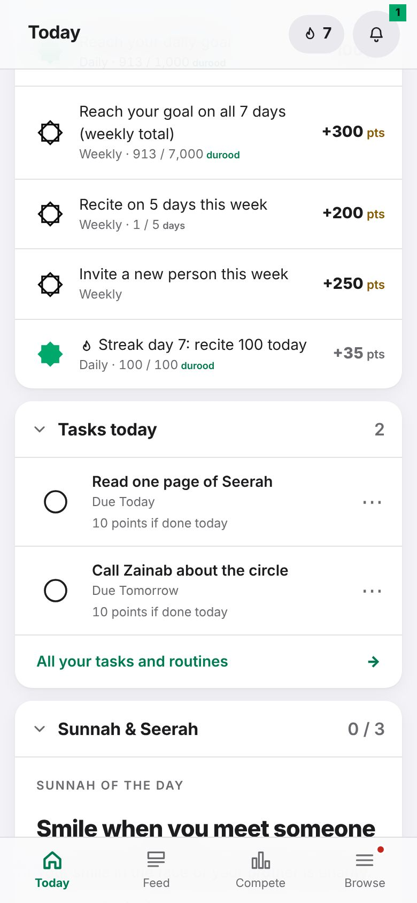
Durood and points are different numbers
Every number in the app says what it counts:
A green durood means durood recited.
An amber pts means points you earned.
Points raise your level. Each level has a title, from Musafir to Muqarrab. Your level also gives you more invites.
How you earn points
For
Points
Each durood
1
Streak: each day you recite 100 or more
5 × streak days (up to 150 a day)
Ticking the Sunnah of the day
20
A photo of the Sunnah
40 more
Your daily reflection
15
A Seerah lecture (with its quiz)
150
A comment on the lecture
20
Replying to someone (up to 5 a day)
2
Each like on your post (the first 10)
2
Someone you invited reaches 100 durood
500
Joining a Seerat Circle
300
Teaching a Seerat Circle (confirmed by an organiser)
1,000
Quests and badges
as shown on each
Your progress and badges
Open Browse → Me. At the top: durood this week, all time, and your best streak. Below that, your level and how many points the next level needs.
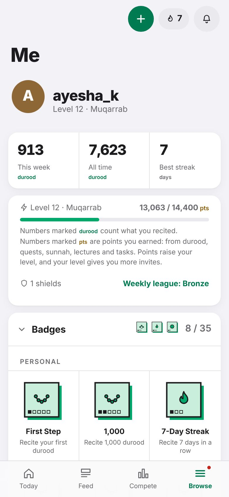
Open Badges. Badges you have earned are in colour. Grey ones are still waiting, with what you need to do written under each.
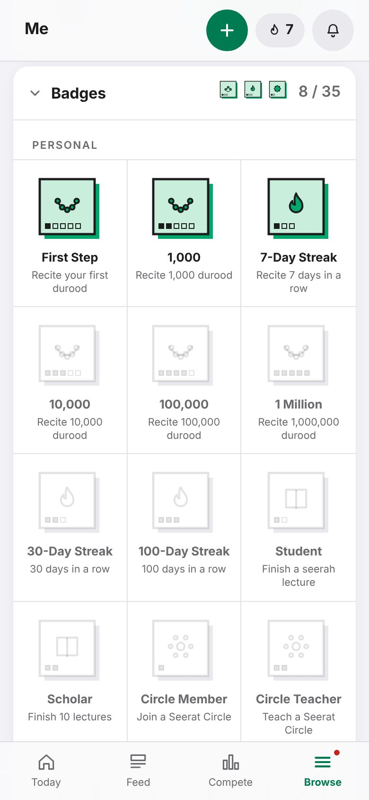
Every day · Tutorial 7
Sunnah, lectures and reflections
Do the Sunnah of the day, watch the weekly Seerah lecture, write a reflection and read the Feed.
Durood comes first. Next to it, Seerah Quest helps you live one Sunnah a day and learn the life of the Prophet ﷺ. All of it is under Sunnah & Seerah on Today.
The Sunnah of the day
Read today's Sunnah, with its source.
When you have done it, tap I did today's sunnah (20 points).
If you like, tap Take or choose a photo, check the picture and tap Post (40 more points). It appears in the Feed.
Before you post a photo
Photograph the Sunnah itself. Please do not show faces, women, children or any personal details. The app removes location data from photos. Each photo can be used only once.
The lecture of the week
Under Lecture of the week, tap Watch. The video opens in the app.
Keep watching: a timer shows how much is left before you can claim.
Answer the short question(s) below the video and tap Check answers. Wrong? Watch again and retry: there is no limit.
Tap Claim reward (150 points). Now you can also write one comment on the lecture (20 points).
Your daily reflection
Under Daily reflection, write one short thought for today (up to 280 characters, no links) and tap Post. One a day, 15 points.
Join a Seerat Circle
Seerat Circles are groups that meet in person to study the Seerah. Tap Find a circle to see where to sign up.
Once you have registered, tap I have registered (300 points and the Circle Member badge).
Do you teach a circle? Tap I teach a Seerat Circle. An organiser confirms it, then you get 1,000 points.
The Feed
Tap Feed at the bottom. You see organisers' news, members' reflections, Sunnah photos and lecture comments, and milestones like a caravan reaching 10,000.
Like a post (the heart) to encourage someone.
Reply in up to 140 characters, 3 replies per post.
Say MashaAllah on a caravan mate's milestone.
See something wrong? Tap the flag to report it. After three reports it is hidden until an organiser checks it.
Tip
You post from Today, not from the Feed. The Feed is for reading.
Together · Tutorial 8
Create or join a caravan
A caravan is a small group you name. Members see each other's progress and rank together.
A caravan (کارواں) is a group you create and name, or join: family, friends, a class or a mosque group. Members see each other's progress, share milestones and climb the caravan rankings together. You can be in one caravan at a time.
Caravan or Qabila?
A caravan is a group you choose. Your Qabila is different: it is everyone who joined through your invite code. See tutorial 9.
Start your own caravan
Tap Browse, then Caravan.
Under Create a caravan, type a name such as noor_caravan and tap Create.
The name must be unique, 3 to 20 English letters, numbers or _. It is how people find your caravan.
Optional: give it a display name in any language, like قافلۂ نور or Noor Caravan. It shows on the caravan page and in the rankings.
Under Invite members, search a member's username and invite them. They see the invitation on their Today screen and tap Join.
When someone asks to join your caravan, they appear under Waiting: tap Accept or Decline.
Join a caravan
Go to Browse → Caravan.
Under Join one, search the caravan's name and ask to join. The owner decides.
Or, if someone invited you, a line on Today says so. Tap it, then tap Join.
Your caravan page
At the top: how many members, the caravan's total and this week's durood, and the next caravan milestone.
Below that, the caravan streak and who has recited today. A caravan streak starts once there are at least 3 members, and a day counts when half of them recite.
Then every member, with their week and a ✓ if they have recited today.
Good to know
The owner can rename the caravan and remove members (the ✕ beside a name).
To leave, scroll to the bottom of the Caravan page and tap Leave this caravan.
Caravans earn badges together, such as Caravan Week for a 7-day caravan streak.
Together · Tutorial 9
Invite people to your Qabila
Share your invite code on WhatsApp. Everyone who joins through you, and everyone they bring, is your Qabila.
Your username is your invite code. Everyone who joins with it, and everyone they bring in, at every level, is your Qabila. Your Qabila has its own totals, milestones and badges.
Share your invite
Tap Browse, then Qabila.
At the top: how many people are in your Qabila, its total and this week's durood, and the next Qabila milestone.
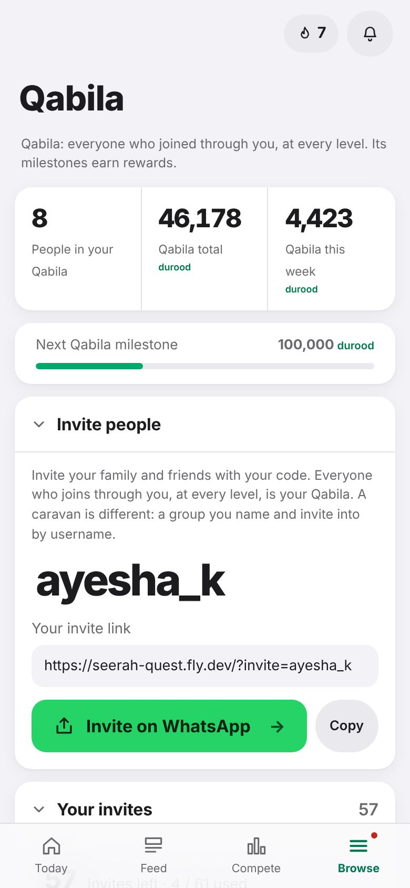
Under Invite people, tap Invite on WhatsApp. WhatsApp opens with a ready message containing your code and link. Choose a contact or group and send.
Or tap Copy to copy your link and paste it anywhere.
When your friend opens the link, your code is already filled in on the sign-up form. When someone you invited reaches 100 durood, you earn 500 points.
How many invites you have
Open Your invites on the Qabila page. It shows how many you have left and how to earn more:
Everyone starts with 10.
+3 for every level.
+2 for each person you invited who reaches 100 durood.
+10 for every 7 days in a row in your best streak.
Below that is People you invited, with their city and durood.
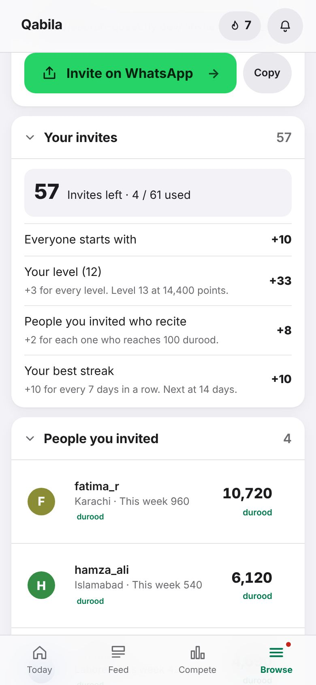
Joined with a general code?
If you joined with a founders code, you can still say who told you about Seerah Quest. On the Qabila page, under Who invited you?, type their username and tap Link. You join their Qabila and they get the credit. This works in your first 14 days, before anyone joins through you.
Good to know
The Qabila page also shows the people above you: who invited you, and who invited them.
People in your Qabila can see your name, city and counts, and you can see theirs.
Seerah Quest has no money anywhere. Rewards are points, badges and milestones only.
Together · Tutorial 10
Rankings, leagues and the 40-day challenge
See how you, your caravan and your city are doing this week, and how close the community is to 10 crore.
Tap Compete at the bottom. Friendly competition can encourage us, but remember the intention: recite for the sake of Allah and His Messenger ﷺ, not for ranking.
The 40-day challenge
Together, the community aims for 10 crore (100,000,000) durood in 40 days. The card shows:
the total so far and which day of the 40 it is;
Needed today: what the community must recite each day from now to finish on day 40;
Reported today and Days left;
whether we are ahead of or behind the plan, and where this pace will take us.
Each crore reached is celebrated in the app, with a picture you can share. The card is also at the bottom of Today.
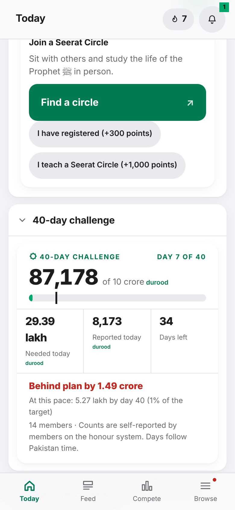
The rankings
Under the challenge card is a row of choices. Tap one to switch:
Choice
What it ranks
People
Members, for This week, the Challenge (the 40 days) or All time.
League
Your weekly league of about 30 members at your level.
Caravans
Caravans by Total, Average per active member, or Growth on last week.
Qabila
Each member's Qabila, the same three ways.
Cities
Cities by what their members recited this week. A city appears once 5 of its members have recited this week.
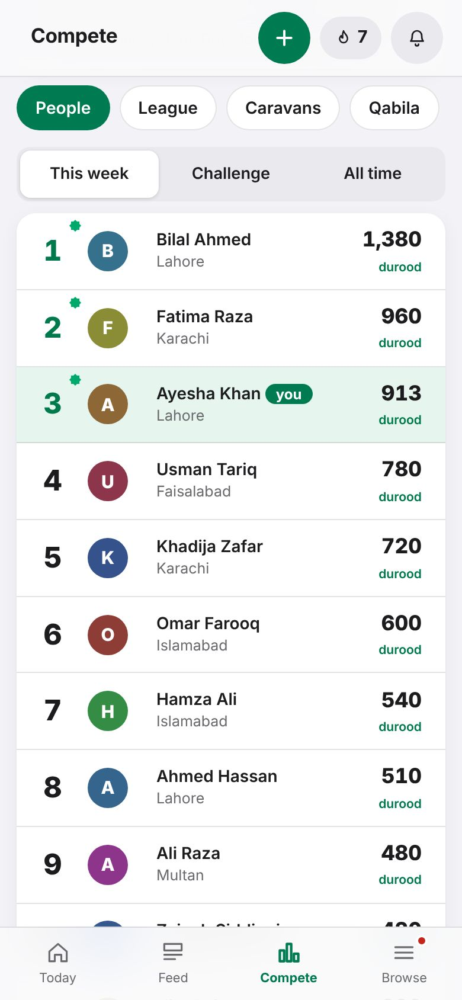
People
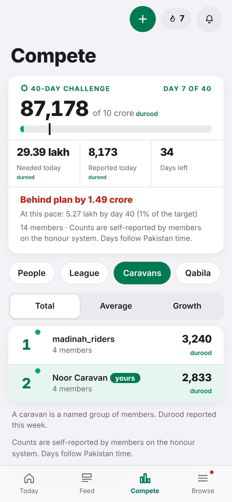
Caravans
Your own row is highlighted in green. Tap anyone's row to see their profile.
The weekly league
Recite on any day of the week to join that week's league. About 30 members at your level compete. At the end of the week the top move up a league and the bottom move down.
The leagues are Bronze, Silver, Gold and Diamond. Reaching Silver, Gold or Diamond earns a badge.
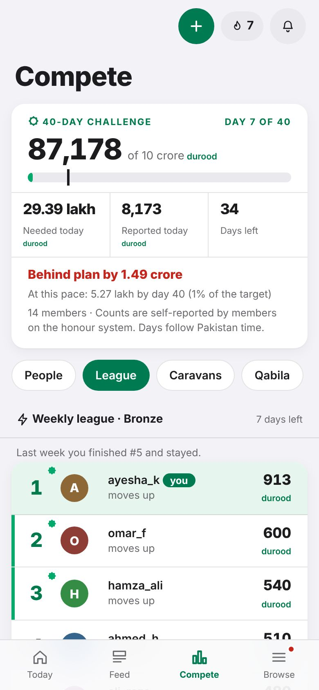
Why am I missing from the rankings?
A very large day (over 20,000, or far above your usual) is checked by an organiser before it appears in public rankings. Your durood still counts on your own record meanwhile, and Today tells you when this happens.
Your account · Tutorial 11
Your profile, reminders and password
Add a photo, set your daily goal, city and reminder time, change your password, or delete your account.
Everything about your account is in Browse → Settings.
Photo: tap Add a photo. The app shrinks it and removes hidden details before saving. Everyone in the app can see it.
The yellow card appears if your email is not confirmed yet. Tap Send link again and open the link in your email.
Language and display: English or اردو, Light or Dark, and whether the counter makes sounds and vibrates.
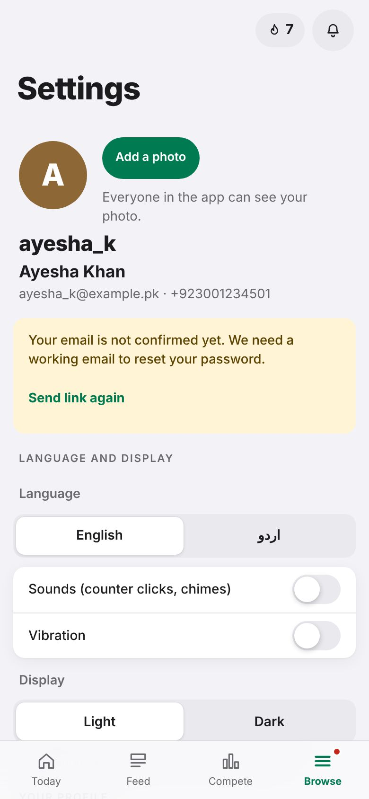
Your profile: your name and one line about you. Plain text, no links. Tap Save.
Settings:
Daily goal: how many durood you aim for each day.
City: the city your durood counts for. You can change it once every two weeks.
Daily reminder time: Pakistan time. Leave it empty for no reminder.
Email: to change it, also type your current password.
Tap Save under them.
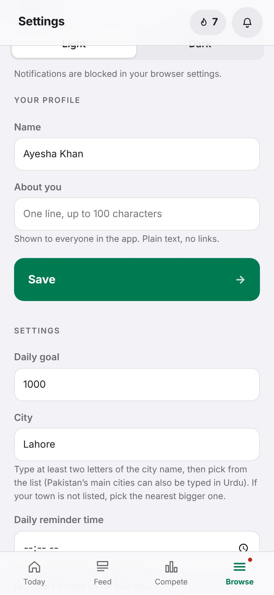
Turn on daily reminders
Install the app first (tutorial 1). Reminders work best from the installed app, especially on Android.
In Settings, under Language and display, tap Turn on reminders and allow notifications when your phone asks. After a 2-day streak, Today also offers to turn them on.
Set a Daily reminder time and tap Save.
You also get a note at 8 pm if your streak is about to break, and when someone joins your caravan. If it says notifications are blocked, allow them for this site in your phone's or browser's settings.
Security
Open the Security section:
Change password: your current password, then the new one twice (at least 6 characters). Your other devices are signed out.
Change your WhatsApp number: the new number and your password. This is also the number you log in with.
Log out of all devices signs you out everywhere except this phone. Useful if you used a shared or lost phone.
Delete your account
Open Delete account at the bottom, type your password and tap Delete my account. Your name, phone number and email are erased. The durood you reported stays in the totals, without your name. This cannot be undone.
Your account · Tutorial 12
Tasks, murabbi and masul (Al-Burhan)
For Al-Burhan members:your tasks and routines, and connecting with your murabbi and masul.
Only in the Al-Burhan edition
These features appear only on the Al-Burhan version of Seerah Quest. If you don't see Tasks and My people in your Browse menu, you can skip this tutorial.
A few words
Word
Meaning here
Murabbi
Your guide, as set in the Mamulaat app. Once linked, they see your full report.
Salik
A person a murabbi guides.
Masul
The person you volunteer under. They can give you tasks and routines.
Razakar
A volunteer under a masul.
Your tasks and routines
Tap Browse, then Tasks. You see your Tasks (with a deadline) and your Routines (on set days of the week). Tasks due today also show on Today.
To add your own, open Add a task or routine, type it (for example Read one page of Seerah), choose a deadline or the days for a routine, and tap Add.
When it's done, tap the round circle. It fills with a tick. Tapped by mistake? Tap Undo in the message that appears.
On a phone you can also swipe a task to the right to complete it, or to the left to move its deadline.
The ⋯ button holds Move deadline (your own tasks), Ask for more time (tasks from your masul), and Remove.
Points for tasks
A task from your masul: 30 points. Your own: 10. A routine on its day: 10 from your masul, 5 your own.
Done late, a task earns less each day late. Each time you push its deadline later, it earns 20% less: a kept commitment is worth more.
Connect with your murabbi
Go to Browse → Me and find Murabbi and masul.
Tap Find my murabbi. The app looks up your murabbi in the Mamulaat app using your WhatsApp number.
Check the name shown. If it's them, tap Yes, connect. Nothing is shared until your murabbi accepts.
What your murabbi sees
Everything: your durood, points, Sunnah, mamulaat, tasks, and your profile including phone and email. Check with them first if you are not sure it is them. Only your murabbi sees your mamulaat.
Add your masul
In Murabbi and masul on the Me page, search your masul's username.
Tap their name, then Yes, add. Your masul sees your tasks, routines and general progress, never your mamulaat.
Tasks they give you appear in your list marked from their name.
If you are a murabbi or masul
Open Browse → My people. Your saliks and razakars are listed here, with requests waiting for you.
Tap a person to open their report. As a masul you can give a razakar a task or routine, and sort razakars into teams with #tags to give a whole team a task at once.
Help · Tutorial 13
Questions and problems
Quick answers to the questions members ask most.
Counting
When does a new day start?
At midnight Pakistan time, wherever you are.
I added the wrong number. How do I fix it?
Right after adding, tap UNDO in the message at the top. Later, go to Browse → Me → History and tap Edit. You can change today's and yesterday's numbers. See tutorial 5.
I forgot to add yesterday's durood.
You can't add a new entry for an earlier day. Add it today. To keep your streak, try to add something every day, even a small number.
I had no internet when I added durood. Is it lost?
No. The app keeps it on your phone and shows it on the counter. It is sent by itself, once only, when you are back online. A grey bar says how many are waiting.
It says "That is over today's limit".
One member can add up to 50,000 a day (10,000 a day in the first week). Add the rest tomorrow, in shaa Allah.
Why am I hidden from the rankings?
A very large day is checked by an organiser before it shows in public rankings. It stays on your own record, and Today explains this. Speak to your organiser if you think it is a mistake.
Account
I forgot my password.
On the log in screen tap Forgot password? and type your email. Open the link within an hour. No email? Check spam, or ask your organiser on WhatsApp for a reset link.
"That invite code is not valid".
Check the spelling of the username with the person who invited you. If they have no invites left, ask someone else or tap Request access.
Can I use the app on two phones?
Yes. Log in on both with the same username and password. Log out of all devices in Settings signs out every other phone.
How do I change my city?
In Settings, under City. You can change it once every two weeks.
Who can see my information?
Other members see your username, name, photo, city, counts and what you post. People in your Qabila above you see your counts too. Your phone and email are not shown to members (in the Al-Burhan edition, a murabbi you accept sees them).
Reminders
I don't get reminders.
Install the app (tutorial 1), then in Settings tap Turn on reminders and allow notifications. Set a daily reminder time and tap Save. If notifications are blocked, allow them for this site in your phone's settings. Reminders are set per phone.
Groups
What is the difference between a caravan and a Qabila?
A caravan is a group you create or join by name, one at a time. Your Qabila is everyone who joined with your invite code, and everyone they invited, at every level. See tutorials 8 and 9.
Can I be in two caravans?
No, one at a time. Leave your caravan first (at the bottom of the Caravan page), then join another.
Does Seerah Quest cost anything?
No. It is free and never asks you for money. Rewards are points, badges and milestones only.
Still stuck?
Ask the person who invited you, or your organiser on WhatsApp.